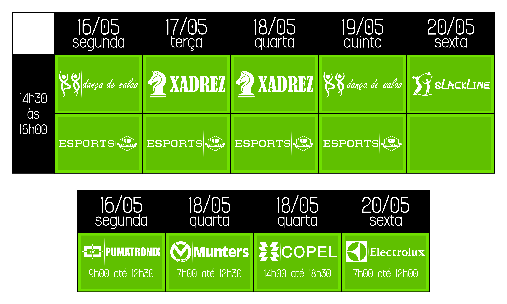
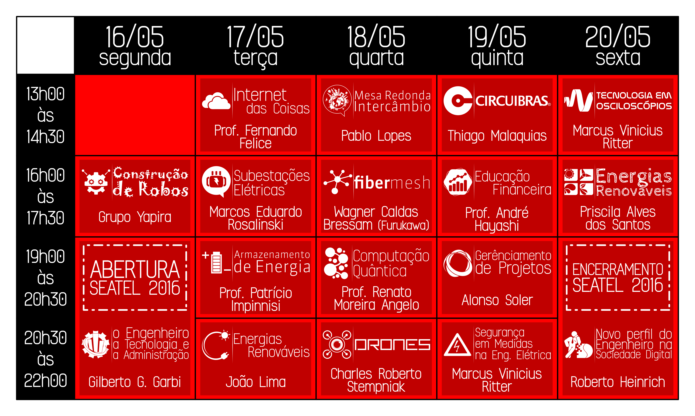
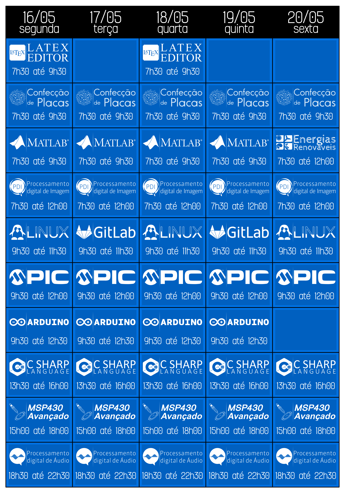
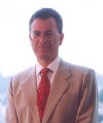
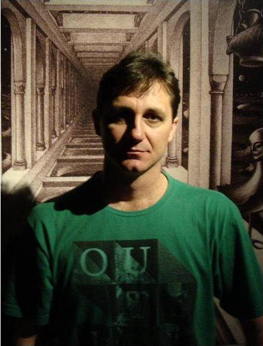
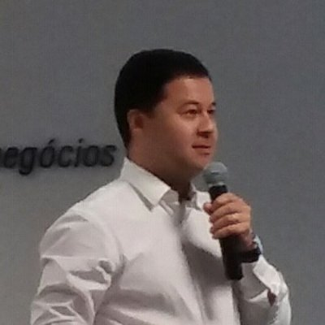
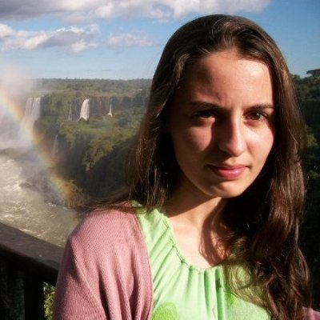
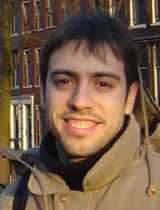

Descrição de como obter os certificados da SEATEL 2016:
Os certificados estão disponíveis, e podem ser obtido pelo CUP, então está listado os passos para obter e validar os certificados:
1 - Primeiramente, é necessário acessar à sua conta do CUP.
2 - Selecionar a opção "MEUS CERTIFICADOS", onde será possível selecionar os certificados que deseja baixar.
3 - Por último, após baixar e imprimir os certificados será nescessário pedir a assinatura do coordenador geral da Seatel Bruno Yuji Tarui (integrante do PET) e e do coordenado do curso de Engenharia Elétrica Wilson Artuzi Junior.
- OBS: lembrando da primeira cláusula de responsabilidade dos congressista presente no termo de "compromisso da Seatel 2106", justifica o motivo de alguns congressistas não receberem os certificados.



Local: Auditório do bloco de Administração
Data: 16 de maio
Horário: 19:00 às 21:00
A palestra de abertura será dividida em três partes: grandes momentos da história da tecnologia; a experiência da administração de empresas estatais; e a experiência da administração de uma multinacional japonesa.

Gilberto Geraldo Garbi,72 anos, engenheiro de Eletrônica e Telecomunicações, ITA 1966.
Ex-diretor da holding Telebrás (1974 - 1979), ex-presidente da Telepar (1979 - 1987), ex-presidente da Nippon Electric do Brasil (NEC) (1987 - 1998). Publicou livros no campo da Matemática, em especial de sua história, sobre a qual ministra anualmente cursos na Universidde de São Paulo.
Local: Auditório do bloco de Administração
Data: 17 de maio
Horário: 13:00 às 14:30
Internet das coisas-Conceito;-Tecnologias;-Aplicações.
Fernando Felice
Coordenador Geral do Curso de Engenharia Elétrica da UNIBRASIL e professor na Escola das Engenharias da UNIBRASIL e na UFPR no Departamento de Engenharia Elétrica (DELT).Possui graduação em Engenharia Elétrica pela Fundação Armando Álvares Penteado (FAAP/1984), Especialização em Telecomunicações e Especialização em Informática Aplicada (PUC/1996 e 2001), Especialização em Gestão da Aprendizagem (UP/2010) e Mestrado em Engenharia Elétrica (UFPR/2005).
Local: Auditório do bloco de Administração
Data: 17 de maio
Horário: 16:00 às 17:30
Subestações Elétricas.Os principais tipos de subestações, seus principais arranjos e configurações. Subestações de Transmissão e Industriais.
Marcos Eduardo Rosalinski,Engenheiro Eletricista formado pelo CEFET-PR em 1999 e pós–Graduado em Gestão Estratégica de Produção pelo CEFET-PR em 2002;
Experiência com projetos e obras de subestações elétricas pelo Brasil, e atuação em manutenção de subestações elétricas tipo industrial. Trabalhei em empresas multinacionais como Renault, Vale e Toshiba.
Local: Auditório do CESEC
Data: 17 de maio
Horário: 19:00 às 20:30
A portabilidade, o aproveitamento de fontes renováveis, os novos sistemas elétricos (smart grid), os veículos elétricos, entre outros, exigem sistemas de armazenamento de energia.Apesar da evolução desses sistemas (principalmente das baterias) eles se tornaram um gargalo tecnológico. A palestra abordará a situação atual e o futuro destas tecnologias.
Patricio Rodolfo Impinnisi,
Professor Adjunto do Departamento de Engenharia Elétrica da Universidade Federal do Paraná - UFPR.Graduado em Física - Moscow State University Lomonossov (1989), Mestrado em Física Matemática - Moscow State University Lomonossov (1991) e Doutorado em Química pela Universidade Federal de São Carlos (1995). Atualmente é pesquisador do Instituto de Tecnologia para o Desenvolvimento - LACTEC.
Local: Auditório do CESEC
Data: 17 de maio
Horário: 20:30 às 22:00
- Contextualização das duas fontes no cenário energético brasileiro e origem da necessidade desses aproveitamentos; - Os recursos disponíves e onde se encontram as regiões mais promissoras; - Conceitos fundamentais e características específicas; - Evolução da potência instalada e perspectivas futuras; - Tecnologias empregadas; - Questões regulatórias e socioambientais; - Importância das duas fontes na geração distribuída.
João Lima,Engenheiro da Copel na área de energias renováveis.
- Graduado em engenharia industrial elétrica pelo antigo CEFET (UTFPR), em 1990;- Mestrado em Sistemas de Energia (UFPR) em 2007; - Doutorando em Engenharia de Recursos Hídricos e Meio Ambiente (UFPR).
Local: Auditório do bloco de Administração
Data: 18 de maio
Horário: 13:00 às 14:30
Mesa redonda com intercambistas de países e programas diferentes irao falar um pouco mais da sua experiencia e tirar duvidas de quem tem o interesse em fazer intercambio.Quem guiará a mesa redonda será o Pablo Lopes (EMJEL).
Local: Auditório do CESEC
Data: 18 de maio
Horário: 19:00 às 20:30
De acordo com a lei empírica de Moore, a cada década, um componente eletrônico típico tem seu tamanho reduzido por aproximadamente uma ordem de grandeza. Seguindo esta taxa de miniaturização, em cinco anos um transistor deve alcançar um tamanho nanoscópico. Nesta escala de comprimento, os componentes elementares de todos os dispositivos eletrônicos, incluindo computadores, deverão se comportar de acordo as estranhíssimas leis da Mecânica Quântica, as quais permitem. Nesta palestra, após uma breve introdução aos princípios fundamentais da teoria quântica, apresentarei os principais avanços e desafios da computação quântica, respondendo, ao final, à pergunta do título.

Renato Moreira Angelo,Professor Associado I - Departamento de Física (UFPR)
FORMAÇÃO: Bacharelado em Física (1996) - Unicamp; Licenciatura em Física (1997) - Unicamp; Mestrado em Física (1999) - Unicamp; Doutorado em Física (2003) - Unicamp; Pós-doutorado (2004) - USP/SP; Pós-doutorado (2009) - Universidade de Bristol (Reino Unido)
Local: Auditório do CESEC
Data: 18 de maio
Horário: 20:30 às 22:00
Toda tecnologia tende a substituir o homem, primeiro no serviço pesado, depois nas atividades que necessitam inteligência. Todas as tecnologias emergentes estão apontando na direção da inteligência artificial e os drones estão acelerando o seu desenvolvimento. Drones são robôs voadores com o sentido da visão aumentado. A visão computacional é um dos campos mais difíceis e também úteis da IA. As novas gerações desses robôs são capazes de reconhecer e reagir a situações com muito mais velocidade e alcance do que as pessoas. Em breve, o espaço aereo dos drones será liberado e controlado. Com isto, nada mais escapará da visão aguçada da máquina. Quais os perigos, desafios e tendências para essa tecnologia?
Charles Roberto Stempniak
Técnico em Eletrônica Digital pela ETEVI-FURB (1992). Engenheiro Eletricista pelo CEFET-PR (1998) com ênfase em Eletrônica Industrial e Telecomunicações. Mestre em Ciências pela UTFPR (2004), com ênfase em Informática Industrial. Doutorando em Engenharia pela mesma instituição, com tese em “Visão Computacional e Inteligência Artificial”. Programador de diversas linguagens desde 1985. Empresário, Pesquisador e Empreendedor desde 1994.
Local: Auditório do bloco de Administração
Data: 19 de maio
Horário: 13:00 às 14:30
Conhecendo o processo de fabricação de Placas de Circuitos Impressos Profissionais da CIRCUIBRAS.Foco nas etapas de processo produtivo de uma placa de circuito impresso, circuitos flexíveis, placas com impedância controlada, furos blind e buried vias.
Thiago Malaquias de Paulo,Supervisor de Engenharia na Circuibras
Gestão de equipe de Engenharia, execução de treinamentos na área CAD/CAM, atendimento e suporte a clientes internos e externos, elaboração de documentações (Instruções de Trabalhos, Procedimentos, Fluxogramas, tratamento de Não Conformidades internas e externas.
Local: Auditório do bloco de Administração
Data: 19 de maio
Horário: 16:00 às 17:30
Educação Financeira x Cenário de Crise: Como criar riqueza sustentável no longo prazo.O palestrante pretende informar os participantes sobre a educação financeira, além de como investir mesmo num cenário de crise.

André Daniel Hayashi
Coordenador na FAE Business School dos cursos de MBA em Finanças.Formado em engenharia industrial elétrica (UTFPR); mestrado em engenharia da produção (UFSC). Especializações: Matemática contextual, Coord internacional, Waco Texas; programa de qualificação operacional - PQO Bovespa; ANCORD (Associação Nacional das Corretoras e Distribuidoras de Valores).
Local: Auditório do CESEC
Data: 19 de maio
Horário: 20:30 às 22:00
-Tipos de categoria de segurança e onde aplicá-las.-Exemplos de problemas corriqueiros na indústria.-Diferenças entre ferramentas de medição.
Marcus Vinicius Ritter
Formação em mecatrônica, gerente de contas chaves e representação há 9 anos das marcas Tektronix, Fluke e Keithley no sul do Brasil. Elaborando projetos para atendimento em aplicações em diversas áreas industriais, pesquisa e desenvolvimento.
Local: Auditório do bloco de Administração
Data: 20 de maio
Horário: 13:00 às 14:30
-Tecnologia existentes no mercado para osciloscópios e diferença entre elas.-Funções e exemplos de aplicações em diversas aplicações (Ex: Protocolos de comunicação)-Comunicação e possibilidades de atuação com software de análises
Marcus Vinicius Ritter
Formação em mecatrônica, gerente de contas chaves e representação há 9 anos das marcas Tektronix, Fluke e Keithley no sul do Brasil. Elaborando projetos para atendimento em aplicações em diversas áreas industriais, pesquisa e desenvolvimento.
Local: Auditório do bloco de Administração
Data: 20 de maio
Horário: 16:00 às 17:30
Tendências de Geração Renováveis , o que o Brasil tem a oferecer ao Mundo?O desenvolvimento de fontes renováveis vem crescendo, tanto em aspecto de eficiência como de tecnologias, e o Brasil tem muito a oferecer nesta área. Pensando neste mundo de possibilidades e negócios, como será o futuro deste mercado?Pensou nas oportunidades que vão florescer?Ja pensou no potencial que o nosso país tem?

Priscila Alves dos Santos,Engenheira Eletricista com Ênfase em Fontes Renováveis e Sustentáveis, Consultora na área de Renováveis e Professora.
Graduada no curso de Engenharia Elétrica da UFPR (2008 - 2014), fez estágio no Instituto LACTEC entre março de 2010 e dezembro de 2014 e, atualmente está fazendo mestrado na UNICAMP (Trabalhos com simulação de fontes renováveis de energia elétrica [geração eólica, fotovoltaica, biomassa e PCH's]), que teve início em 2015.
Local: Auditório do bloco de Administração
Data: 20 de maio
Horário: 19:00 às 21:00
Serão abordados tópicos sobre as novas demandas de perfil do engenheiro na Sociedade Digital com apresentação sobre conceitos, competências que os alunos deverão ter como objetivos principais, conhecimentos e atitudes valorizados nesta sociedade fortemente influenciada pelas novas tecnologias. Serão apresentadas propostas sobre como a educação em engenharia pode contribuir para a formação de engenheiros aptos a contribuir e trabalhar para o desenvolvimento desta nova sociedade que gradualmente se torna digital onde empresas estão se transformando para se manterem ativas.
Roberto Heinrich,
Engenheiro de eletrônica graduado no Instituto Tecnológico de Aeronáutica ITA em 1970. É coordenador da Comissão Temática do Congresso Internacional Futurecom desde 1995 até a presente data. Lecionou na Universidade Federal do Paraná no curso de graduação por 41anos com ênfase em Eletrônica e Telecomunicações e em cursos de especialização na Universidade Federal do Paraná e Pontifícia Universidade Católica do Paraná.
Local: Auditório do bloco de Administração
Data: 16 de maio
Horário: 16:00 às 17:30
A palestra abordará o processo de construção de um robô de combate, a qual incluirá seu planejamento, pensamento estratégico, desenho, projeto, aquisição de peças e montagem. Explicando a metodologia usada pelo grupo YAPIRA para construir seus robôs de combate, que são usados em campeonatos.---------------------------A palestra será apresentada por membros do Yapira UFPR (alunos de Engenharia Mecânica e Engenharia Elétrica).
Local: Auditório do CESEC
Data: 19 de maio
Horário: 19:00 às 20:30
O Gerente de Projetos planeja a execução de projetos, acompanha escopo estabelecido e o progresso das rotinas, a fim de cumprir metas, prazos e custos estabelecidos. Identificar os riscos para estudar formas de mitigar impactos e corrigir ações são esseciais. E essa palestra visa explicar melhor a função e a formação de um Gerente de Projetos.
Alonso Mazini Soler
Fundador, e atualmente presidente, da empresa J2DA Consolting e professor do INSPER.Para mais informações acesse ao seu linkedin.
Local: Auditório do bloco de Administração
Data: 18 de maio
Horário: 16:00 às 17:30
FiberMesh - rede ópticas para Smart GridApresentação da Furukawa como centro de pesquisa e desenvolvimento e apresentação da tecnologia FiberMesh para comunicações Smart Grid.
Wagner Caldos Bressam
Graduado em Engenharia Industrial Elétrica com ênfase em Eletrônica e Telecomunicações, pela Universidade Tecnológica Federal do Paraná, em 2010. Ingressou na Furukawa Industrial S.A em 2011 e atualmente trabalha no centro internacional de tecnologia e desenvolvimento (T&D) como gerente de desenvolvimento de hardware.
Local: Lab 4 (PA-Dep. de Informática)
Data: 16 e 18 de maio
Horário: 07:30 às 9:30
Este curso oferecido pelo PET Computação é uma introdução ao sistema de edição e de diagramação de textos denominado LaTeX, que é a principal ferramenta de geração de textos científicos no que se refere a qualidade gráfica e de composição. Os principais tópicos a serem abordados são uma introdução aos conceitos do LaTeX, a estrutura de geração de documentos, principais pacotes, trabalho com figuras, e referenciação bibliográfica.
Local: Lab 4 (PA-Dep. de Informática)
Data: 16, 18 e 20 de maio
Horário: 09:30 às 11:30
O Windows já não é mais suficiente para você? Quer se sentir um Hacker usando o terminal? O curso de Linux oferecido pelo PET Computação abordará temas necessários para a navegação e ambientação no sistema operacional Linux. Alguns temas abordados serão: Diferentes distribuições, comandos básicos e intermediários, manipulação de arquivos, gerenciamento de processos e pacotes. Aprenda isso e seja bem vindo ao mundo do Software Livre!
Local: PK 02
Data: 16 a 20 de maio
Horário: 13:30 às 16:00
O C# é uma linguagem orientada a objetos que foi criada pela Microsoft por meados de 2001, isto ocorre em um ambiente onde linguagens como Delphi, C++ e Java estavam em uso e ocupavam uma grande fatia do mercado de programadores. Sendo assim, quando a Microsoft desenvolveu esta linguagem e a fez baseada principalmente nelas que são linguagens muito utilizadas até os dias de hoje, melhorando alguns aspectos e colocando o melhor de cada uma.Este curso, oferecido pelo PET Elétrica (Marcos Henrique Horst Cavalli), abrange o básico desta linguagem até uma área mediana. Começando por simples comandos que imprimem na tela, passando por laços como for, while, seguidos de uma passagem pelas classes Maths, Strings, StringsBuilder, DateTime, que são classes para realizar tarefas especificas, após isto será visto o básico de LINQ, uma linguagem interna ao C# projetada para lidar com bancos de dados e terminando com botões, labels e todo outro elemento que será necessário para se projetar uma janela para seu programa.
Local: Lab 1 (PA-Dep. de Informática)
Data: 17 e 19 de maio
Horário: 09:30 às 11:30
Você já trabalhou em equipe? Já teve que compartilhar código? Já teve que montar uma lista de compras com várias pessoas? Já programou? Se você respondeu que sim para ao menos uma dessas questões é bom estar utilizando controle de versão. Se não estiver, a oficina de Git oferecida pelo PET Computação tem como objetivo introduzir o conceito de controle de versão e o uso do Git como ferramenta para isso, do básico ao avançado, incluindo os padrões de uso, os chamados “gitflows”. Domine git e github para melhorar suas atividades pessoais, projetos e trabalhos em equipe.
Local: PK 04
Data: 16 a 19 de maio
Horário: 07:30 às 09:30
O MATLAB é um software matemático que possibilita um ambiente de programação de alto nível com interface de aplicativos e linguagem de programação simples. É utilizado em inúmeras áreas de engenharia, curso será feito pelo PET Elétrica (Eduardo Esmanhotto).
*Pré-requisito: nenhum. *Ementa: 1) INTRODUÇÃO; 2) VETORES & MATRIZES; 3) GRÁFICOS; 4) MATEMÁTICA SIMBÓLICA; 5) FUNÇÕES; 6) MATLAB BÁSICO PARA CONTROLE DE SISTEMAS LINEARES.
Local: PK 05
Data: 20 de maio
Horário: 07:30 às 12:00
A cogeração de energia elétrica vem crescendo a cada dia, e hoje o mercado esta sendo aquecido pelas fontes renováveis. Com o sistema de bandeiras em vigor, há maior facilidade em se instalar um sistema de Geração Fotovoltaica, mas como entender este mercado?
O que será abordado no curso?Será apresentado no curso: a identificação das tecnologias, normas, como fazer um pré dimensionamento de um sistema, as noções básicas deste tipo de geração, o custo inicial de um projeto de sistema fotovoltaico e o retorno de investimento. Abordando os principais aspectos deste tipo de geração.
------------------------- O curso será ministrado pela egresso do curso de Engenharia Elétrica (UFPR), Priscila Alves dos Santos (que também oferecerá a palestra sobre energias renovaveis).
Local: PK 04
Data: 16 a 19 de maio
Horário: 09:30 às 12:00
Arduino é uma plataforma de prototipação eletrônica baseada em hardware e software open-source. Através desta plataforma é possível programar um microcontrolador de forma fácil e flexível, para criar objetos e ambientes interativos. Neste curso, os participantes irão conhecer como funciona a plataforma Arduino e como fazer este interagir com diversos projetos, utilizando conceitos básicos de eletrônica, comunicação serial e programação, em conjunto com suas diversas bibliotecas e linguagens de referência.
----------------------------O curso será ministrado por Vandir Junior, integrante EMJEL, onde será apresentado o básico da programação de um shield de Arduino.
Local: PK 12 (Sexta-feira: PK 08)
Data: 16 a 20 de maio
Horário: 07:30 às 09:30
O curso de confecção de placas (PCB) tem por objetivo ensinar o aluno a confeccionar placas de circuito impresso pelo método de transferência térmica, ensinando todas as técnicas e melhores maneiras de fazer as placas com a melhor qualidade possível.Serão feitas duas placas, uma que é um shild para arduino e a segunda será uma placa de um pisca-pisca, esta ultima será soldada para ensinar as técnicas de solda.
-------------------------O curso será ministrado pelo graduando do curso de Engenharia Elétrica na UFPR, Leonardo Costa, e terá um custo para sua inscrição de 15 reais (esse custo cobre o preço dos materiais usados no curso disponibilizados pelo professor).-Recomenda-se que os alunos interessados estejam no mínimo no 3º período do curso de Engenharia Elétrica.
Local: PL 01
Data: 16 a 20 de Maio
Horário: 18:30 às 22:30
Workshop em processamento de Áudio em tempo real com kit DSP Texas.1. O processador de sinais TMDX5505.Laboratórios de processamento de áudio em tempo real.2. Echo / reverb3. Filtros FIR / IIR4. Estruturas de filtros e impacto no arredondamento dos coeficientes5. Efeitos: Modulação / Saturação / Não linearidades6. Processamento multi-taxa7. Filtragem adaptativa (cancelamento de ruído)8. Correlação (limitador de ruído de fundo)

Luis Henrique A. Lolis
Professor at the Electrical Engineering Department of Federal University of Parana (UFPR) and member of the Group of Integrated Circuits and Systems (GICS). His research activities are focused on system level design for configurable, multi-standard, low power RF transceivers, and linking the transceiver configurable features for cognitive radio through signal processing.
Local: PK 02
Data: 16 a 20 de maio
Horário: 09:30 às 12:00
Tem por objetivo ensinar o aluno as teorias de microcontroladores, ensinar a programar os microcontroladores em linguagem C. Os programas serão simulados em programas de simulação. Serão abordados os assuntos de Programação em C, Registradores, Sensores, Display LCD, Comunicação Serial, Funções, Interrupções.... Para incentivar o aluno será feio um trabalho completo de instrumentação eletrônica com leitura de sensores, escrita em Display e comunicação serial.
----------------------- O curso será ministrado pelo graduando do curso de Engenharia Elétrica na UFPR, Leonardo Costa.
Local: PL 01
Data: 16 a 20 de maio
Horário: 15:00 às 18:00
-Abordagem prática e teórica dos microcontroladores msp430xxxx, e msp432P401x de acordo com os kits de cada aluno, desde configuração básica até implementação de interfaces e sistemas completos de aquisição, atuação, controle e PDS. Também se aprenderá a utilizar a biblioteca de IQmath para processamento digital de sinais.
-Exemplos de projetos com interface de Ethernet e utilização de sistema operacional.
-Tira dúvidas (MSP, C2000 e Tiva) e apoio em projetos individuais.
Pré-requisitos: Saber a base de circuitos digitais, programação em C, conhecer os fundamentos básicos de um microcontrolador.
Desejável: Ter programado o microcontrolador e utilizado pelo menos uma interface de comunicação e o ADC.
Obs.: cada aluno deverá levar seu notebook com CCS instalado.
--------------------------------------------- O curso será ministrado por Eduardo Jagher, graduando de Engenharia Elétrica na UFPR e ex-petiano, assistente de desenvolvimento na Pumatronix.
Local: PL 01
Data: 16 a 20 de maio
Horário: 07:30 às 11:30
O curso parte da junção de dois mundos, o universo do Python e o processamento de imagens com OpenCV. A simplicidade da confecção de algoritmos proporcionada pelo Python é forte aliada na compreensão das complexas, porém fundamentais aplicações do processamento digital de imagens. Nas aulas serão abordados as peculiaridades e usos da linguagem com enfoque total no uso da biblioteca OpenCV, bem como problemas reais que podem e poderão ser solucionados com a ferramenta.Pré-requisito: Uso do computador pessoal. Conhecimentos básicos em C/C++ e ou Python.
Guilherme Cordeiro Vogt
Aluno do quarto ano de engenharia elétrica, teve um período de sua graduação na Technische Hochschule Ingolstadt, onde desenvolveu pesquisa em torno do tema de PDI. Hoje ainda na pesquisa , tem como áreas processamento de imagens embarcado e redes de sensores sem fio.
Na segunda feira será ministrada a aula de forró e na quinta feira será sertanejo.A aula será misnistrada por Lilian Satiko Omura, foi bolsista e instrutora durante 7 anos na escola Espaço Latino, localizado em Londrina, e nos últimos 4 anos, começou a dar aula de particular e assumiu turma fixa. É arquiteta, formada pela Universidade Estadual de Londrina, e atualmente se mudou para Curitiba para fazer Terapia Ocupacional na UFPR, mas sua grande paixão é pela dança de salão.
---------------------------------------Local: Hall do bloco de Administração -- Data: 16 e 19 de maio. -- Horário: 14:30 às 16:00.
Slackline é um esporte de equilíbrio sobre uma fita elástica esticada entre dois pontos fixos, o que permite ao praticante andar e fazer manobras por cima.Ele trabalha tanto o corpo quanto a mente, fornecendo um ótimo exercício físico que fortalece todos os músculos do corpo, principalmente membros inferiores e região abdominal e também trabalha equilíbrio e concentração. O Stackline será montado em dos gramados e ficará disponível para quem quiser tentar (o material será fornecido pelo Daniel Pires - EMJEL).
---------------------------------------Local: Gramado em frente ao RU. -- Data: 20 de maio. -- Horário: 14:30 às 16:00.
-Serão organizadas no hall mesas com jogos de xadrez para o uso livre.Há muitas lendas em torno da invenção do Xadrez. Acredita-se que tenha surgido na Índia há milhares de anos e evoluído na Europa.O xadrez atual também designado por Xadrez Ocidental ou Xadrez Internacional surgiu na Europa no século XV. Enxadrista (ou xadrezista) é a designação de um jogador de xadrez.O Dia Internacional do Enxadrismo é comemorado no dia 19 de novembro, data de nascimento do cubano José Raúl Capablanca (1888-1942), um dos maiores enxadristas de todos os tempos.
---------------------------------------Local: Hall do bloco de Administração. -- Data: 17 e 18 de maio. -- Horário: 14:30 às 16:00.
-Será organizado um espaço no hall com mesas e um roteador para que cada um possa levar seu notebook e jogar jogos em lan, exemplos de jogos: "Age of Mythology", "Counter Strike 1.6" e "Age of Empires".
---------------------------------------Local: Hall do bloco de Administração. -- Data: 16 à 19 de maio. -- Horário: 14:30 às 16:00.
-A expoelétrica é um evento oferecido pelo PET, em que os alunos expõem seus projetos para o público e para a banca julgadora, premiando o melhor, mais complexo ou criativo dos projetos.
---------------------------------------Local: Hall do bloco de Administração. -- Data: 16 à 19 de maio. -- Horário: 14:30 às 16:00.
A
Pumatronix é uma empresa com foco no desenvolvimento e fabricação de soluções de alta tecnologia para a captura de imagens e leitura automática de caracteres, com aplicações nos ramos de segurança pública e privada.------------------------------O participante da visita técnica à Pumatronix irá conhecer a fábrica e receber uma apresentação geral da empresa e seus produtos, além de uma descrição das atividades de um engenheiro eletricista neste setor.
------------------------------
Embarque: Em frente ao bloco de Administração
Data: 16 de maio
Horário: 09:00 às 12:40
A
Munters é líder global e parceira premiada em soluções de tratamento de ar que visam à economia de energia.------------------------------O participante da visita técnica a Munters terá a oportunidade de conhecer algumas das soluções inovadoras da empresa especializada na climatização de ambientes em setores indispensáveis da indústria.
------------------------------
Embarque: Em frente ao bloco de Administração
Data: 18 de maio
Horário: 07:10 às 12:30
A
Copel foi criada em outubro de 1954, é a maior empresa do Paraná e atua com tecnologia de ponta nas áreas de geração, transmissão e distribuição de energia, além da área de telecomunicações.------------------------------O participante da visita técnica à Copel, terá um panorama geral de como é realizado o controle da distribuição de energia das redes de Curitiba e região metropolitana, além de conhecer antigas mini usinas, que atualmente se encontram inoperantes.
------------------------------
Embarque: Em frente ao bloco de Administração
Data: 18 de maio
Horário: 14:30 às 18:15
Líder mundial em eletrodomésticos e aparelhos de uso profissional, a Electrolux está presente em mais de 150 países, vendendo mais de 40 milhões de produtos ao ano.------------------------------O participante da visita técnica à Electrolux, conhecerá como os produtos da marca são fabricados, além de ter um panorama geral da empresa.
------------------------------
Embarque: Em frente ao bloco de Administração
Data: 20 de maio
Horário: 07:00 às 12:00